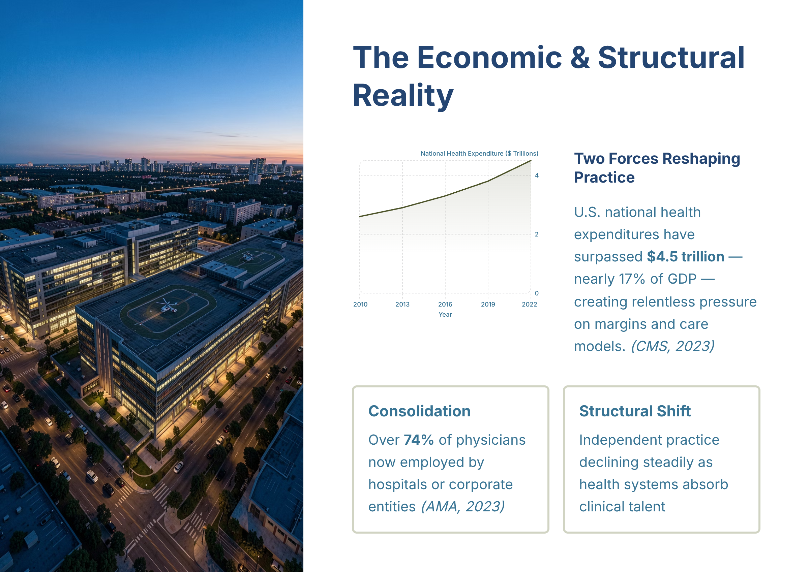

#1
The Economic & Structural Reality
slide-01
creativevariant Acluster headCoherence pendingcard 1orientation landscape
Approved slide

[+]Asset status: present | Dimensions: 2400×1698
Motion review: Motion: static | n/a
Cluster c-u01Position establishInterstitial type n/aIsolation target n/aDevelop type n/aArc From isolated awareness of local practice pressures to recognition of system-level economic and organizational change through trend evidence on spending and consolidation.
Script
Status: Attached
96 words@150 WPM 38.4shead narrationtiming concept-builddensity mediumposition establishintent credibleintent serves master
The main message: two structural forces now define your operating reality. U.S. national health expenditures have surpassed $4.5 trillion — nearly 17% of GDP, putting constant pressure on margins and care models. At the same time, consolidation has shifted authority — over 74% of physicians now employed by hospitals or corporate entities, while independent practice keeps declining. You feel that in autonomy and decision rights. To shape care today, it’s not enough to perfect one clinic; you need the skills to influence a large, complex enterprise — visual context for why this capability becomes non‑optional.
Script notes
The Economic & Structural Reality — Explain the major structural forces reshaping physician practice: rising national health expenditures and the shift from independent practice to employment within large health systems.
Evidence & provenance
- Source ref
- n/a
- File path
- gary/A_slide-01.png
- Created
- 2026-06-26T06:07:10.124887+00:00
- Literal-visual source
- n/a
- Matched segments
- seg-01
- Narration refs
- n/a
- Visual refs
- 0
- Visual mode
- n/a
- Visual file
- n/a
- Motion type
- static
- Motion status
- n/a
- Motion source
- n/a
- Motion duration
- n/a
- Runtime target (s)
- n/a
- Motion asset
- n/a
- Timing role
- concept-build
- Content density
- medium
- Visual detail load
- medium
- Bridge type
- none
- Behavioral intent
- credible
- Duration rationale
- Establishes the thesis with two anchored data points and the practical implication.
- Cluster position
- establish
- Interstitial type
- n/a
- Isolation target
- n/a
- Quality
- Vera None | Quinn None
Findings
No findings attached.